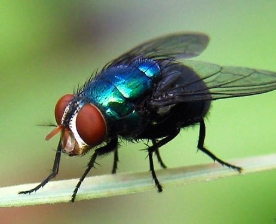

Click na imagem (Som do Animal)
Sintomas da Mosca de Berne (Dermatobia hominis)
Seus sintomas podem levar a óbito
Humano
- Dor intensa na região afetada
- Coceira
- Sensação de “ferroada”
- Formação de feridas
- Secreção de líquido amarelado
- Inchaço e formação de vermelhidão no local
Cão
- Lesões na pele de odor fétido
- Inchaço da região afetada
- Coceira ou lambedura da área atingida
- Claudicação (quanto atinge as patas)
- Dor local
- Falta de apetite
- Perda de peso
Gato
- Emagrecimento
- Apatia
- Lambedura
- Vermelhidão
- Queda de pelo no lugar do berne
- Miíase (bicheira) secundária